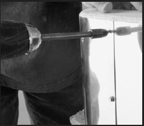
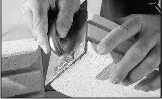
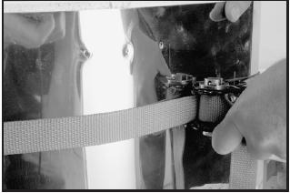
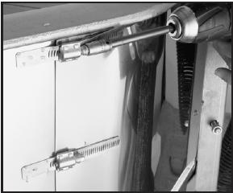

4. Poista ylemmät ruuvit jotka kiinnittävät teräskuoren uunin takana. Löysää alempaa ruuvia mutta älä irroita sitä kokonaan.

5a. Jos kannessa on ileät 2 tuuman tiilet: Nosta pois vahingoittuneet tiilet.
5b. Jos uratiilet: Kuumenna vastusta vaurioituneen tiilen kohdalta
propaanipolttimella kunnes se hehkuu punaisena.
Kapeakärkisillä pihdeillä nosta kuuma vastus urasta.
Poista vaurioitunut tiili.

6a. Pane vaihtotiili paikoilleen. Tiilen päitä voi joutua hiomaan ennenkuin
tiili sopii tarkasti.

6b. [Tee uuteen tiileen vastaava ura.] Kuumenna taas vastuslanka punahehkuiseksi. Pujota kapeakärkisillä pihdeillä vastus uraan.

Kuvassa kiristäminen erityisellä vanteella
jonka saa lainaksi tehtaalta.
[Täällä joutuu fuskaamaan jollakin remmiviritelmällä]
7. Kiristä uuniin teräskuorta niin että ruuvinreiät tulevat kohdakkain.
Kiinnitä takaisin ruuvit, jota irroitit kohdassa 4.
Huom: Älä kiristä ruuveja liikaa. Varo erityisesti jos käytät koneellista ruuvinväännintä.
8. Asenna kannen nostosysteemi takasin uunin takaseinään. Kiinnitä jousen alapää takaisin.
Jos mallissa ei ole kevennysjousta, kiinität vain saranan takaisn.
Monirenkaiset digitaaliset uunit.
Huom: Katso kuvat edellisetä kohdasta.
1. Nosta kansi ja iirota jousen alapää. Sulje kansi.

2. Nosta kansi uunin päältä. Löysää kiristimet, jotka pitävät teräskuorta koossa.
Kiristimet ovat sivuilla.
3a. Sileät tiilet: Poista vaurioitun tiili,
3b: Uratiilet: Kuumenna vastusta vaurioituneen tiilen kohdalta
propaanipolttimella kunnes se hehkuu punaisena.
Kapeakärkisillä pihdeillä nosta kuuma vastus urasta.
Poista vaurioitunut tiili.
4a. Pane vaihtotiili paikoilleen. Tiilen päitä voi joutua hiomaan ennenkuin
tiili sopii tarkasti.
4b. [Tee uuteen tiileen vastaava ura.] Kuumenna taas vastuslanka penahehkuiseksi.
Pujota kapeakärkisillä pihdeillä vastus uraan.
5. Kiristä kiristimien ruuvit, joita löysäsit kohdassa 2.